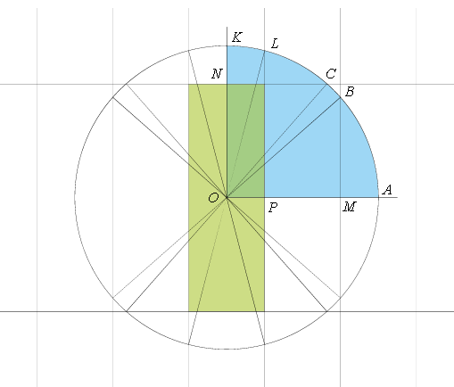
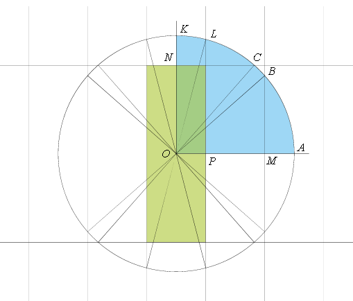
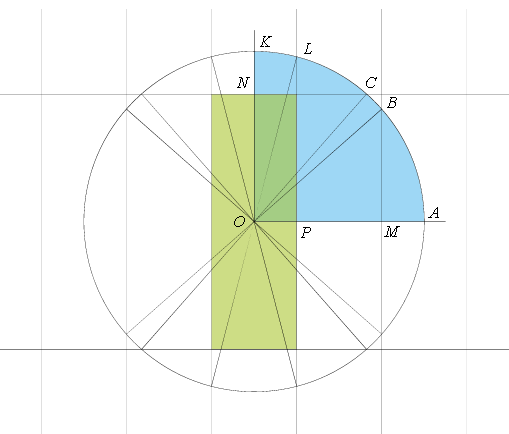

In the centre of a rectangular billiard table that is 3m long and 1m wide, there is a billiard ball. It is hit by a cue in a random direction. After the impact, the ball stops, passing exactly 2m. Find the expected number of reflections from the sides of the table.
We draw a grid with a cell of $3m \times 1m$. The central cell of the grid is the table highlighted in the figure in a light green colour. We need to extend the grid in all directions so that it fits a circle with a radius of 2m with a centre at the centre of the table, O.
Let the ball "pass through the sides", rolling in straight lines along the grid. The reflections from the side of the table correspond to the intersection of one line of the grid. Obviously, we can consider only a quarter of the circle, that is, all directions that lead the ball to one of the points of the arc AK.

The figure shows that there are two intersections if the ball hits the arc AB or the arc CL. If the ball hits the arc BC or KL, then there is one intersection.

Hence, the probability $p_2$ of two intersections is 
The probability $p_1$ of one intersection is $1 – p_2$.
The expectation of the number of intersections $p_1 + 2p_2 = 1 + p_2$ =